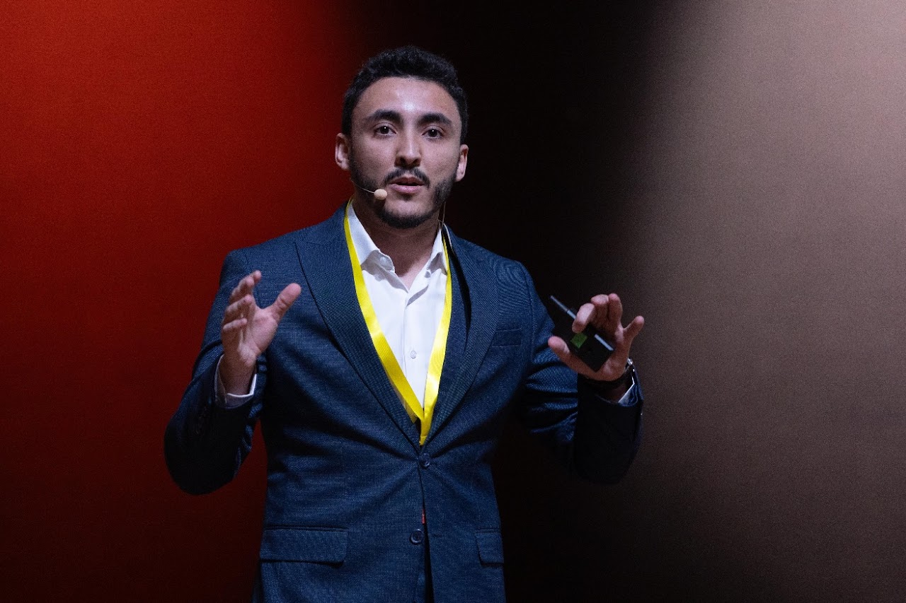

Survey Design for Fair Resource Allocation
Submitted

I am currently a Postdoctoral Researcher at the Harvard Business School AI Institute.
My research aims at developing the foundational principles to strategically collect data within complex systems.
The value of a final decision is inextricably linked to the quality of the data that informs it. Yet, data collection is often treated as a passive or ad-hoc process, which leads to critical oversight, biased conclusions, and significant opportunity costs. This reality motivates the central question of my work:
How to optimally balance the cost of acquiring new information against its value?
I received my PhD from the Department of Industrial Engineering and Operations Research at Columbia University, where I was advised by Prof. Rachel Cummings and Prof. Adam N. Elmachtoub. Prior to joining Columbia, I earned a BS and MS in Applied Mathematics from Ecole Polytechnique.
I grew up in El Jadida, Morocco.
Submitted
Preliminary version presented at EC26
Preliminary version presented at COLT26
Preliminary version appeared in the proceedings of NeurIPS23
Major revision in Management Science
Honorable mention, INFORMS George Nicholson Student Paper Competition, 2026
Preliminary version presented at EC21
Minor revision in Operations Research